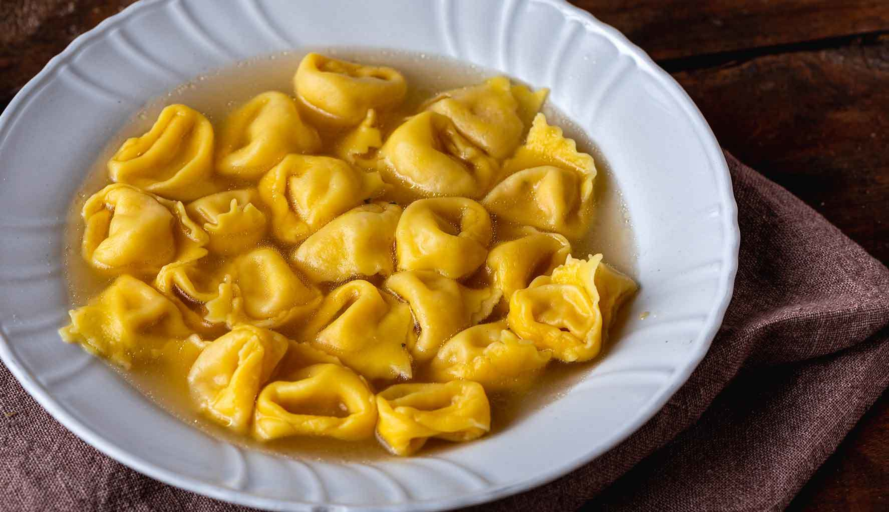
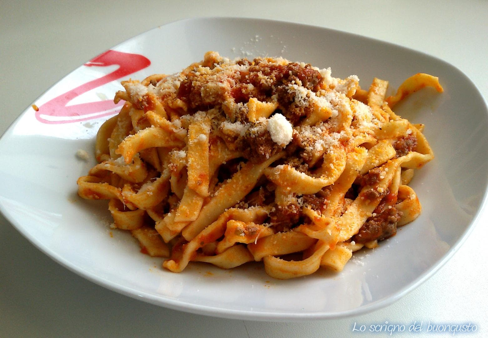

Le nostre ricette

Lasagne alla bolognese
Pasta fresca, ragù, besciamella e Parmigiano: un classico della tradizione emiliana.

Tortellini in brodo
Tortellini ripieni serviti in un brodo caldo, secondo la tradizione emiliana.

Tagliatelle al ragù
Tagliatelle fresche all'uovo accompagnate dal tradizionale ragù emiliano.